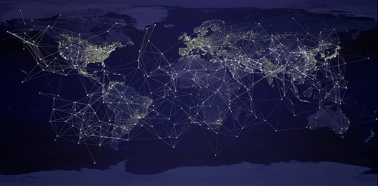

Internet est sans doute l'invention la plus révolutionnaire de l'histoire de l'informatique. Ce réseau mondial connecte aujourd'hui plus de 5 milliards de personnes et des milliards d'appareils à travers la planète.
Mais derrière la simplicité apparente de la navigation web se cache une technologie complexe et ingénieuse : le protocole TCP/IP, véritable langage universel qui permet à tous les ordinateurs du monde de communiquer entre eux.

Tout commence en pleine Guerre froide, en 1969. Le département de la Défense américain crée ARPANET, un réseau expérimental conçu pour relier quelques universités et centres de recherche. L'objectif militaire était clair : créer un réseau de communication capable de survivre à une attaque nucléaire en répartissant l'information sur plusieurs chemins.
Le 29 octobre 1969, le premier message est envoyé entre l'UCLA et Stanford. Ironiquement, le système plante après seulement deux lettres ("LO" au lieu de "LOGIN"), mais l'Histoire vient de basculer.
Dans les années 1970, d'autres réseaux universitaires et commerciaux voient le jour à travers le monde, mais ils ne peuvent pas communiquer entre eux. Chacun utilise son propre protocole, sa propre "langue". C'est là qu'intervient TCP/IP.
En 1974, Vint Cerf et Bob Kahn publient les spécifications du protocole TCP/IP (Transmission Control Protocol / Internet Protocol). C'est une révolution : pour la première fois, on dispose d'un standard universel permettant à n'importe quel ordinateur de communiquer avec n'importe quel autre, quel que soit son système d'exploitation ou son fabricant.
Le 1er janvier 1983, ARPANET adopte officiellement TCP/IP. Cette date marque la véritable naissance d'Internet tel qu'on le connaît. En 1989, Tim Berners-Lee invente le World Wide Web au CERN, rendant Internet accessible au grand public. Le reste appartient à l'histoire.
| Date clé | Événement | Impact |
|---|---|---|
| 1969 | Création d'ARPANET | Premier réseau informatique à commutation de paquets |
| 1971 | Premier email | Ray Tomlinson invente le courrier électronique |
| 1974 | Invention de TCP/IP | Standard universel de communication |
| 1983 | Adoption de TCP/IP | Naissance officielle d'Internet |
| 1989 | Invention du Web | Tim Berners-Lee rend Internet accessible à tous |
| 1990s | Explosion commerciale | Navigateurs, Google, Amazon, eBay |
Quand vous envoyez un message ou visitez un site web, vos données ne voyagent pas d'un seul bloc. Elles sont découpées en milliers de petits "paquets" qui empruntent chacun leur propre chemin à travers le réseau mondial.
Imaginez que vous envoyez une lettre, mais qu'au lieu de l'envoyer entière, vous la découpez en 1000 morceaux, chaque morceau prend un itinéraire différent (avion, train, bateau), et tous se retrouvent miraculeusement dans le bon ordre chez votre destinataire. C'est exactement ce que fait TCP/IP !
IPv4, créé dans les années 1980, utilise des adresses sur 32 bits permettant environ 4,3 milliards d'adresses uniques. Cela semblait énorme à l'époque, mais avec des milliards de smartphones, ordinateurs, serveurs et objets connectés, on a manqué d'adresses dès les années 2010.
IPv6, avec ses adresses sur 128 bits, offre 340 sextillions d'adresses (un nombre à 39 chiffres !). De quoi attribuer des milliards d'adresses IP à chaque grain de sable sur Terre. La transition est en cours mais prend du temps car elle nécessite de modifier l'infrastructure mondiale.
En 2024, Internet représente plus de 5 milliards d'utilisateurs, 200 milliards d'emails envoyés chaque jour, 500 heures de vidéo uploadées sur YouTube chaque minute, et des millions de serveurs dans des datacenters consommant 1% de l'électricité mondiale.
Le cloud computing, les réseaux sociaux, le streaming, l'IoT (objets connectés), la télémédecine, le télétravail... tout repose sur TCP/IP. Ce protocole inventé il y a 50 ans continue de faire fonctionner le monde numérique.
Internet a transformé notre société plus profondément que n'importe quelle invention depuis l'imprimerie. Et tout cela grâce à une idée simple mais géniale : découper l'information en petits paquets et les laisser trouver leur propre chemin.
Pour aller plus loin : Regarder une vidéo explicative sur Internet et TCP/IP